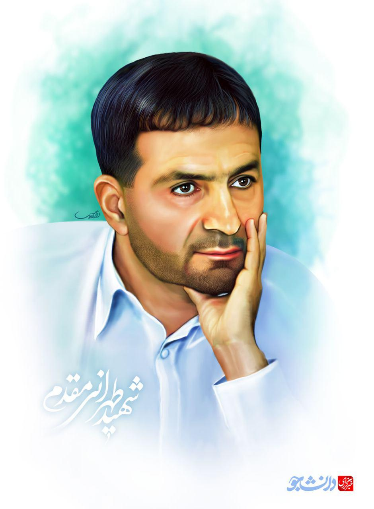

Hasan Tehrani Moghadam
Tehrani Moqaddam is a general known for his relentless efforts to further develop Iran’s missile program. He began establishing Iran’s missile program amidst the Iran-Iraq war which began on 1980 and lasted for eight years.